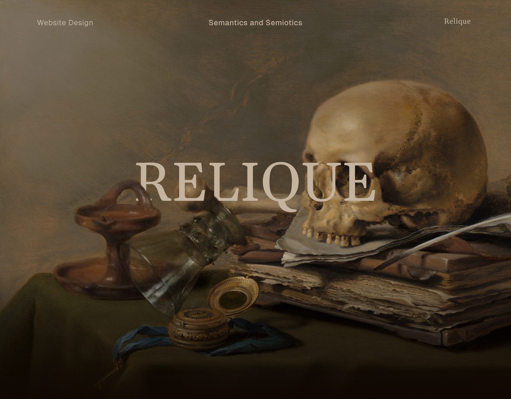
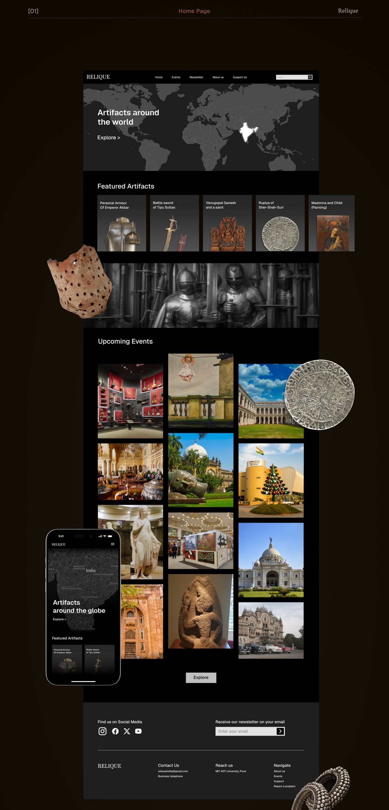
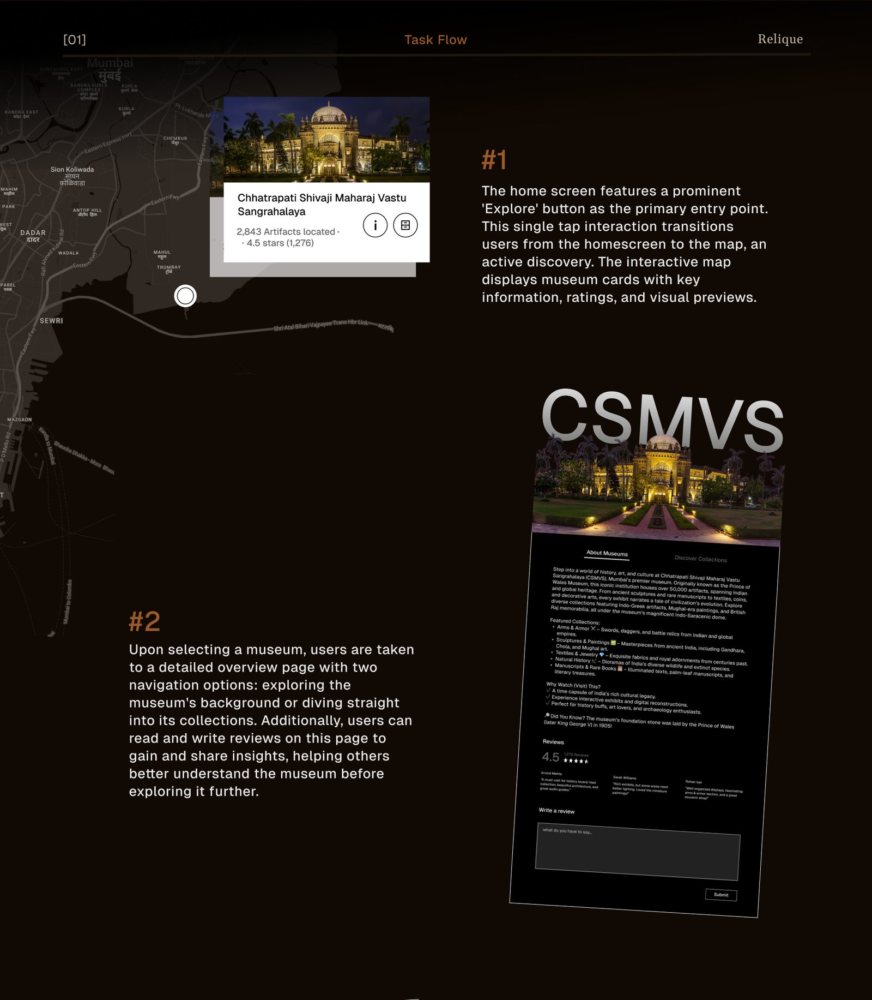
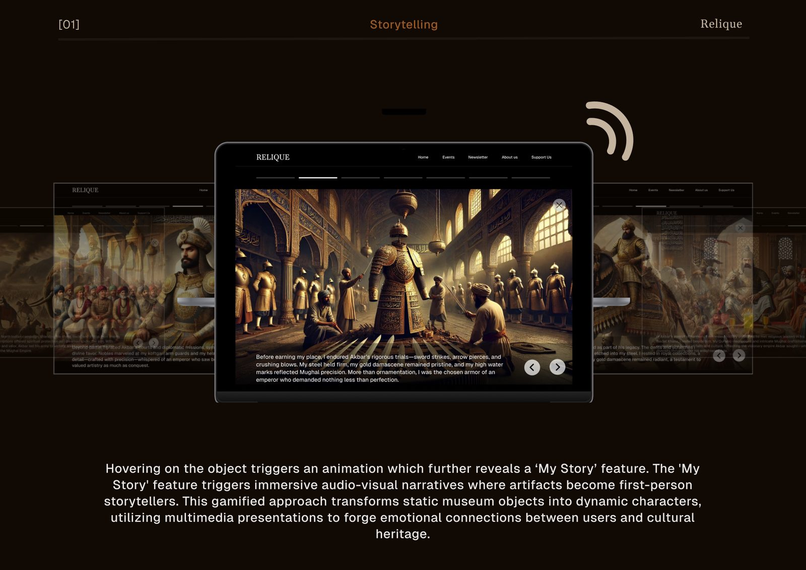
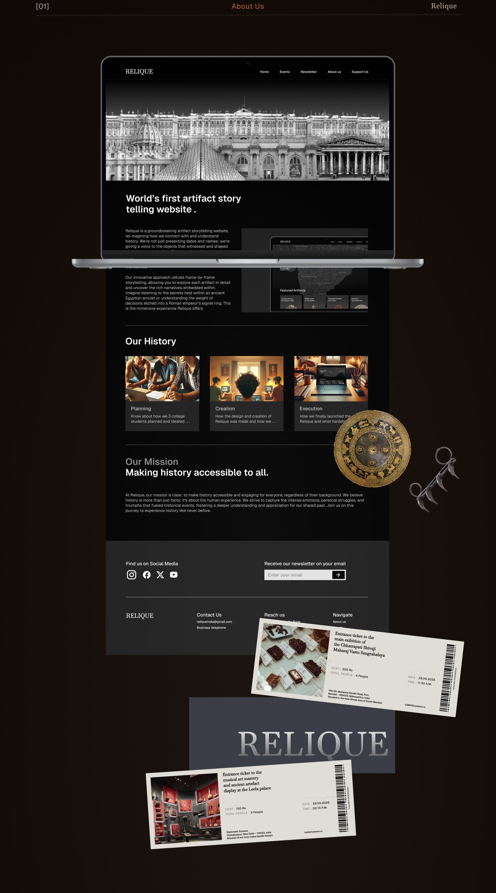

A museum website where every artifact tells its own story, in the first person.

Museum collections are usually presented as dates, names and labels. Relique lets the objects that witnessed history speak for themselves, so a visit feels personal and emotional instead of static.
Featured artifacts, museums around the world and upcoming events, set in a dark, gallery-like frame.

Explore opens an interactive map of museums, each with ratings and artifact counts, then a museum page to read its background or jump into its collection.

My Story turns an object into the narrator, with audio and visuals, so history is heard from the thing that was there.

An About page, a mission to make history accessible to everyone, and museum tickets as physical touchpoints.

The full case study, with every step of the process, is on Behance.